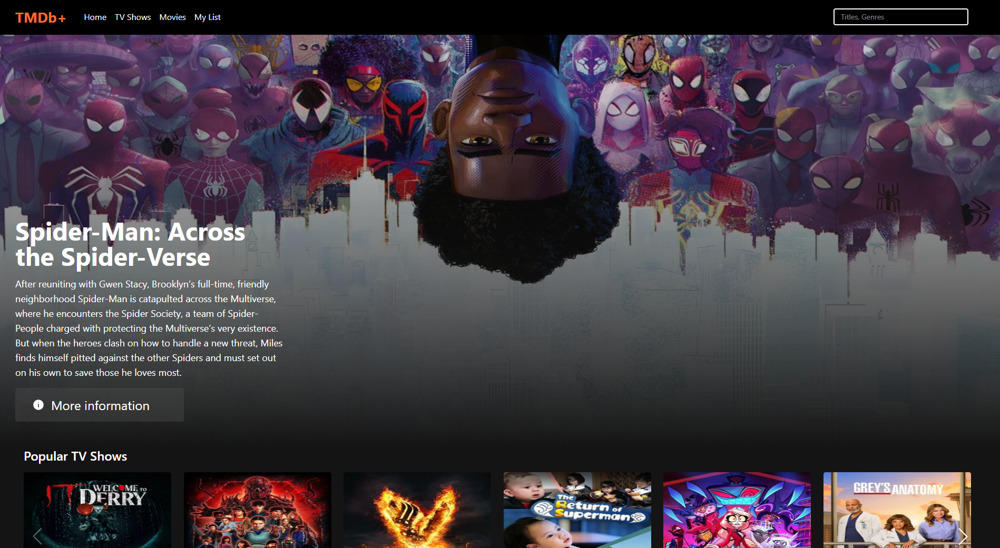

TMDb+
Esta página contém o estudo de caso do Projeto de Código Aberto TMDb+, que inclui a Visão Geral do Projeto, as Ferramentas Utilizadas e os Links Ativos para o produto oficial.
Link Projeto
Visão Geral do Projeto
Este projeto é uma aplicação web desenvolvida com React, totalmente integrada à TMDB API, que oferece um catálogo interativo de filmes e séries. O objetivo foi criar uma experiência semelhante às grandes plataformas de streaming, com navegação fluida, design responsivo e informações atualizadas em tempo real.
Descrição Geral
O usuário pode explorar filmes e séries populares, mais bem avaliados, lançamentos e conteúdos atualmente em exibição. A interface utiliza carrosséis dinâmicos, facilitando a navegação entre categorias. Cada item possui uma página dedicada com detalhes completos, como sinopse, elenco, avaliação, trailers e gêneros. A aplicação também conta com um sistema de busca eficiente e uma lista de favoritos totalmente persistente, graças ao uso do localStorage.
Principais funcionalidades implementadas
- Carrosséis dinâmicos
- Página de detalhes
- Sistema de busca
- Lista de favoritos
- SPA rápida e responsiva
Teconologias Utilizadas
- React (componentização e SPA)
- React Router
- Tailwind CSS
- TMDB API
- JavaScript (ES6+)
- LocalStorage
- Vercel (deploy)
- GIT
- Github